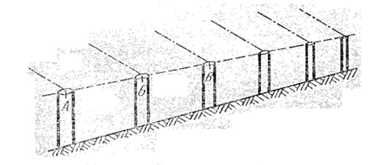

15-маруза Мавзу: Бино ва иншоотлар ўқларини жойда махкамлаш
Бош ўқларни режалаш. Режалаш ишлари лойиҳасига биноан, бош ўқлар режалаш ишлари учун махсус
тузилган геодезик асос пунктларига
нисбатан режаланади.
Бош ўқларни режалаш учун умумий режалаш чизмасига асосан йирик
масштабда иншоотга яқин бўлган геодезик пунктларнинг ҳамда бинонинг
лойиҳавий ўлчамлари схемаси тузилади. 1-расмда келтирилган мисолда
иншоот ўқлари полигонометрия пунктларига нисбатан қутбий усулда режаланади. Жойда топилган
бошланғич 1 ва 11 нуқталар маҳкамланади ва улардан 20-30 м масофада створ бўйлаб қўшимча 1'
ва 11'' нуқталар белгиланади.
Бошланғич I ва II нуқталар орасидаги масофа лойиҳада кўрсатилган аниқликда ўлчанади,
шунингдек ўқлар ўрнини белгиловчи В 11 ва В 46 нуқталар жойда маҳкамланади.
Агарда майдонда қурилиш тўри мавжуд бўлса (1-расм), бино ўқлари бош нуқталари I ва IV
тўрнинг яқин пунктига нисбатан ҳисобланган абсцисса ёки ордината тўр томони бўйлаб, кичиги
эса перпендикуляр бўйлаб ўлчанади.
1-расм. Бош ўқларни режалаш.
Бош ўқларни режалашда бинонинг жойдаги умумий ҳолати аниқланади ҳамда у жойдаги мавжуд
биноларга нисбатан ориентирланади.
Полигонометрия пункти ёки қурилиш тўри пунктидан лойиҳавий масофаларнинг қўйилиш нисбий
хатолиги 1/5000; лойиҳавий бурчаклар эса 20" гача аниқликда бўлиши мумкин. Жойда барча I,
II, III, IV нуқталар маҳкамлангандан кейин, ҳар қайсисига теодолит ўрнатилади ва уларнинг
ўзаро перпендикулярлиги текшириб кўрилади. Қурилиш ишлари учун тўғри бурчакдан четланиш 30"
гача рухсат этилади. Шуни эътиборга олиш керакки асосий ўқларнинг ўзаро перпендикулярлиги,
уларни режалашдаги асосий талаблардан биттаси ҳисобланади.
2-расм. Қурилиш тўри ёрдамида бош ўқларни режалаш.
Ихота деворларини лойиҳалаш ва қуриш. Иншоот ўқлари бир-бирига нисбатан +1-2 мм
аниқликда режаланиши керак. Бундай аниқликни таъминлаш учун иншоот периметри бўйлаб ёғочдан
ёки металдан махсус ихота девори ўрнатилади. Ихота деворлари масофа ўлчаш ва режаланган
ўқларни белгилаш учун қулай шароит яратиб беради. Ихота девори бош планга асосланган ҳолда
бино ўқларига параллел лойиҳаланади. Одатда ихота деворлари бинодан маълум масофада унинг
тўртала томонини тўғри
бурчак кўринишида ўраган ҳолда лойиҳаланади (3-расм).
3-расм. Иҳота деворини лойиҳалаш.
Ихота деворлари узлуксиз ёки Створли кўринишда тузилиши мумкин.Узлуксиз ихота деворини
тузиш учун бино периметри бўйлаб ҳар 3 м дан устунчалар ва уларга горизонтал ҳолатда, бир
хил отметкада текис тахтача ёки металл пластинка маҳкамланади (4-расм).
4-расм. Узлуксиз иҳота девори.
Створли ихота девори алоҳида устунчалардан иборат бўлиб, ҳар жуфт
устун қандайдир ўқни маҳкамлайди. Устунчалар бир хил баландликда ер
ишлари майдонидан ташқарида, бинонинг тегишли ўқларига параллел ҳолда
ўрнатилади (5-расм).

5-расм. Створли иҳота девори.
Ихота девори қулай бўлиши ва унинг устига штатив ўрнатиш мумкин бўлиши учун унинг
баландлиги
0,5-1,2 м бўлиши керак.
Створли ихота девори узлуксизга нисбатан тежамли ва анча барқарор ҳисобланади. Ихота
девори
тузилишидан қатъий равишда қуйидаги асосий талабларга жавоб бериши керак:
1. Ихота деворлари томонлари бинонинг бўйлама ва кўндаланг ўқларига параллел бўлиши
керак.
Агарда бу шарт бажарилмаса, ихота деворларига белгиланган ўқлар орасидаги масофа
систематик
равишда лойиҳадагидан кичик бўлиб боради.
2. Ихота девори тўғри чизиқдан иборат бўлиши керак, негаки ўлчаш амалга оширилаётганда
ўлчаш асбоби етарли аниқликда створда ётқизилиши мумкин бўлсин.
Ўлчов асбобининг створдан четланиш йўл қўярли қиймати қуйидаги ифода орқали ҳисобланиши
мумкин:
бу ерда: £ – ўлчов асбоби чеккаларининг створдан четланиши қиймати;
1- ўлчов асбоби узунлиги. Нисбий хатолик
3. Ихота девори горизонтал бўлиши керак, негаки у бўйлаб лойиҳавий масофа қўйилган қиялик
учун тузатма киритиш мумкин бўлсин.
Бино ўқларининг охирги ҳолати иxота деворларига мих қоқиш ёки темирга чизиқ тортиш
билан
белгиланади ва ёнига тегишли ўқ номери ёзиб қўйилади. Ихота деворлари бўйлаб масофа ўлчаш
пўлат лента ёки пўлат рулетка ёрдамида барча тузатмаларни ҳисобга олган ҳолда амалга
оширилади.